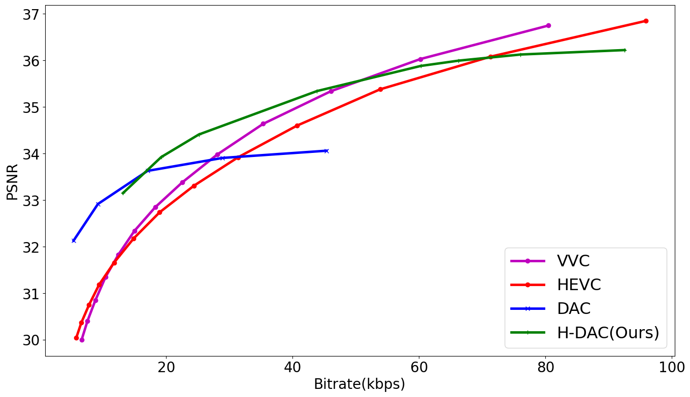
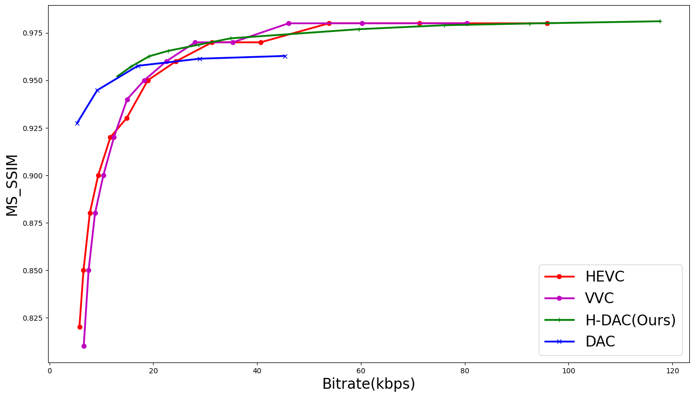

Quantitative Metrics
At very low bitrates, the animation based coding framework outperform HEVC on all image quality metrics considered. However, whereas the DAC framework has a lower range of quality scalability i.e. after 25kbps, it performs worse than the HEVC codec, using the base layer increases the range to about 70kbps for the HDAC.


Over the low bitrate range, the HDAC framework achieves over 30% bitrate savings over the HEVC codec as shown in the table below:
| HEVC | VVC | |
|---|---|---|
| BD Quality / BD Rate | BD Quality / BD Rate | |
| PSNR | 1.07 / -33.36 | 0.97 / -30.7 |
| MS-SSIM | 0.02 / -33.41 | 0.02 / -28.33 |
| msVGG | -19.6 / -48.84 | -20.04 / -41.64 |